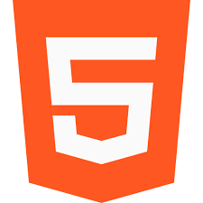

My Top Skills



Third-year Computer Science student at Sahyadri College of Engineering and Management seeking a Full Stack Developer position to apply and enhance programming skills, backed by a strong academic background, diverse project experiences, and proficiency in C/C++.
Education :
Bachelor of Engineering (B.E.) in Computer Science and Engineering
Sahyadri College of Engineering and Management, Karnataka
Expected Graduation: 2025
Current CGPA: 9.63
Pre-University
Sri Venkataramanaswamy PU College, Bantwal
Percentage: 97%
High School
Government High School Koila, Koila
Percentage: 96%
Internships :
Accolades Solutions Mangalore (1 month)
Worked on developing a model/website for movie screenwriters, converting voice inputs into proper movie dialogue text.
BCG Virtual Internship in Datascience (1 month)
Participated in a virtual internship on Datascience provided by BCG through Forage.
InUnity Internship (4 months)
Contributed to various projects addressing social issues during the internship at InUnity.
Web Development Projects
Deep Learning and Machine Learning Projects
Create lasting memories with the Family Travel Tracker. This application serves as a digital scrapbook, allowing users to log and share their travel adventures. With features like itinerary planning and photo sharing, the Family Travel Tracker becomes the perfect companion for documenting and reliving cherished family journeys.
Check it OutTest your geographical knowledge with the Capital Quiz. This interactive app challenges users with diverse questions about world capitals. Engage in entertaining gameplay that not only tests but enhances your global geography knowledge. Application promises Knowledge with Enjoyment for Enthusiasists
Check it OutUnlock new adventures with the Activity Suggester project. By analyzing user preferences, this application delivers personalized activity recommendations. The Activity Suggester ensures tailored suggestions, transforming every moment into a delightful and personalized experience.
Check it Out
Discover the power of organization with the React Keeper App. Crafted using React.js, this dynamic note-taking application offers a user-friendly interface and robust features for efficient note management. Capture, organize, and retrieve your thoughts seamlessly with this versatile and intuitive note-taking solution.
Check it Out
Embark on a nostalgic journey with the Simon Game project. This classic memory game challenges players to remember and repeat sequences of colors and sounds. The sleek design and interactive features promise hours of entertainment and mental stimulation, making it a timeless and engaging experience for all.
Check it Out
Effortlessly boost your productivity with the ToDo App. This robust task management application provides seamless organization, allowing users to efficiently create, prioritize, and manage tasks. The intuitive interface ensures a smooth planning experience, helping users stay on top of their schedules with ease.
Check it Out